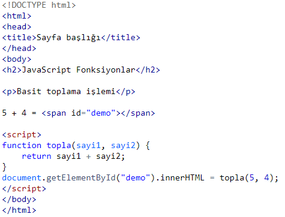
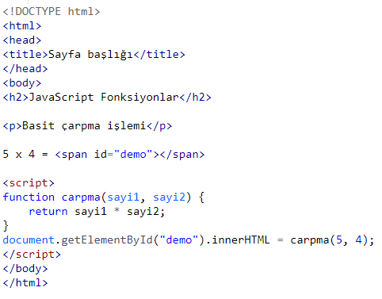
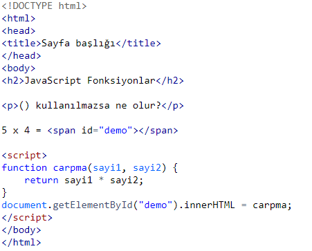

FONKSİYON YAPISI
Bir JavaScript fonksiyonu, özel bir işlemi yerine getirmek için tasarlanmış bir blok koddur.
Bir JavaScript fonksiyonu farklı bir kod tarafından çağrıldığı zaman çalışır.
Örnek

Ekran çıktısı
JavaScript Fonksiyonlar
Basit toplama işlemi5 + 4 = 9
JavaScript Fonksiyon Sözdizimi
Bir JavaScript fonksiyonu oluşturmak içinfunction anahtar kelimesini kullanırız. Daha sonra bu fonksiyona bir ad veririz.Fonksiyona ad verildikten, parentez açıp kapatılır () ve en sonunda {} parantezleri arasına fonksiyon çağrıldığında çalışacak kod blogunu yazarız.
Fonksiyon adı harf, sayı, alt çizgi ve dolar işaretini barındırabilir.
Fonksiyon eğer parametre alıyorsa fonksiyon adından sonra() parantezleri arasına parametreler girilir: (parametre1, parametre2)
Örnek
function fonksiyonAdi(parametre1, parametre2) {
//fonksiyon çağrıldığında çalıştırılacak kod bloğu
}
Fonksiyon parametreleri, fonksiyon çağrıldığında gönderilecek ve fonksiyon tarafından işlenecek verilerdir. Örneğin, fonksiyona gönderilen iki sayıyı toplayacak bir fonksiyon yazmak istiyorsak, gönderilecek değerler için fonksiyona parametre ekleriz. Fonksiyon bu parametrelere atanan değerleri alır ve kod bloğu içinde bunları işler. Fonksiyon parametreleri {} içinde yerel değişkenler gibi kullanılır.
JavaScript Fonksiyonunu Çalıştırmak / Çağırmak
Oluşturulan JavaScript fonksiyonu özel bir şekilde tanımlanmadıysa kendi başına çalışmaz. Fonksiyonu çalıştırmak için onu çağırmanız gerekir.Bir Fonksiyon şu durumlarda çalışır:
*Bir olay tetiklendiğinde fonksiyon çalıştırılabilir (örneğin kullanıcının bir butona tıklaması bir olaydır)
*Başka bir JavaScript kodu tarafından fonksiyon çalıştırılabilir.
*Otomatik olarak / kendi kendini çağırarak
JavaScript Fonksiyonu ile Değer Döndürmek
Bir JavaScript fonksiyonu kendine verilen görevi yerine getirdikten sonra değer döndürebilir. Bazı fonksiyonlar içindeki kod blogunu işler ve görevi sona erer. Bazı fonksiyonlar da kod blogunu işler ve bu işlemin donunda çağrıldığı noktaya bir değer döndürür.Örnek

Ekran çıktısı
JavaScript Fonksiyonlar
Basit çarpma işlemi5 x 4 = 20
Yukarıdaki örnekte ilk satırda sonuc adında bir değişken tanımlanıyor.
Yine aynı satırda carpma(4,3) fonksiyonu çağırılıyor / çalıştırılıyor. Bu fonksiyon iki parametre alıyor: 4,3 carpma() fonksiyonu iki sayıyı çarpacak ve çıkan sonucu yani 12 değerini sonuc değişkenine atayacaktır.
Neden Fonksiyon Kullanırız?
Fonksiyonlar sayesinde yazdığımız kodları tekrar tekrar kullanabiliriz.Aynı kodu tekrar yazmamız gerekmez.
Fonksiyonlar uygulamaların daha küçük parçalara bölünmesini sağlar.
Böylelikle kod daha anlaşılır hale gelir.
() Operatörü Fonksiyonu Çağırır
JavaScript fonksiyonun sadece adını yazarsanız geriye fonksiyon nesnesi döner. Fonksiyonu () simgeleri ile çağırırsanız size sonuç döner.Örnek

Ekran çıktısı
JavaScript Fonksiyonlar
() kullanılmazsa ne olur?5 x 4 = function carpma(sayi1, sayi2) { return sayi1 * sayi2; }
Fonksiyonlar Değişkene Doğrudan Değer Atamak İçin Kullanılabilir
Bir fonksiyonun dönen değeri doğrudan bir değişkene atanabilir. Bunun yanında fonksiyon string birleştirme ya da matematiksel işlemlerde doğrudan da kullanılabilir.Örnek
// Fonksiyonun dönen değerini bir değişkene atayabilirsiniz var sonuc = carpma(4 ,3);
var metin = "Bu işlemin sonucu:" + sonuc;
//Veya doğrudan yapmak istediğiniz işlemde kullanabilirsiniz
var metin = = "Bu işlemin sonucu:" + carpma(4 ,3);